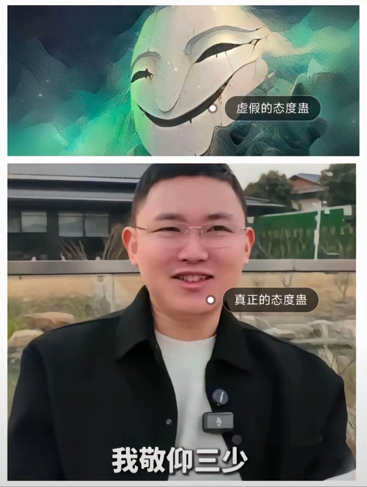

谁的情节那句听的我好爽[流泪]
终于有人看明白水里那个蛇尾是法海而不是小青了
小青是男孩子吧，为能合理的跟在姐姐身边才幻化成女的，我记得他们初相识是这样
最后许仙问的是“姐姐呢？”而不是“娘子呢”[泣不成声]
讲的真好，我这才明白《青蛇》这部电影真正的含义，小青就是姐宝蛇啊[流泪]只是因为姐姐在乎所以她才会去做
原来小青对姐姐是真爱，要不然小青就不会流泪成人了，小时候就顾着看许仙白素贞了。小青勾引许仙看清许仙老实人的三心二意，爱慕法海强大正义发现法海也是道貌岸然，最后发现她的情在姐姐身上，不是男的身上。
看到小青哭的那一刻我也掉下了眼泪，男人、呵 这个懦弱的男人 这个无情的男人 、无情的人比不上有情的妖。可悲！
看过剪辑的最好的一版[感谢][感谢]
小青最后的做法就很像，雅雅想杀了白月初那一瞬间，姐姐去了哪里，你就去哪陪她吧！
小青爱姐的一生[黑脸][黑脸]
这版解说，是我最喜欢[玫瑰]
这个东西是真不错的，按理说应该赚的盆满钵满啊，不太相信负债
黄皮书的作文是市面上最好最有深度的[流泪]
看评论更能凸显出咱们国家版权保护意识有多差
考研期间最后悔的就是买了黄皮书，除了真题，其他的书屁用没有，纯营销起来的[微笑][微笑][微笑]
当年考研的时候都是借钱备考，欠了一屁股债，能省则省，非常抱歉我用的是电子版盗版[流泪]
就没听过重复的[憨笑][憨笑]
到底是谁在制作这些音乐[捂脸][捂脸][捂脸]
宝宝，不好意思打扰你 虽然你拍的这个猫猫很可爱但这个BGM其实是虐人的猫用的[流泪]
之个就是音药[赞]
少数名族r&b唱法
和那个“我打电话问你在哪个包房，给我开门勒是个五十多岁了嬢嬢”是不是一个唱法[疑问]
要火，这首 《富婆打工记》 真的很好听，唱出了我这十年的心酸，一瞬间眼泪禁不住在打转，红了眼，湿了心，再见了我心爱的深爱的富婆
你还别说，这种带着折耳根味的唱法听起来真有点上头[泣不成声]
开始以为是青铜，没想到这么好听，不知道为什么听了会想到那首“爆刘继芬”
有点像那首 富婆KTV
拐咯，姨妈些…
一股很浓的古早小说味儿
以前的真人痛恨笔趣阁[看] 现在的真人感谢笔趣阁[呲牙]，正是因为笔趣阁把他的小说保留到现在，哪怕是正版上面被下架[看] 正是：福兮祸所依，祸兮福所倚[大笑][大笑][大笑]，有坏也有好。[灵机一动]
笔趣阁真是血海传承
真人在小说被封那年就已经死了，现在留下的只不过是地灵罢了[流泪]
真人老了 已经被规矩蛊抓住了
仙工开物感觉不咋滴，成绩好完全是因为大爱仙尊[捂脸]类似于，我欠快播一个vip
蛊真人是唯一一本让我深夜凌晨四点热血沸腾的小说，当时刚好是炼定仙游的片段，根本睡不着[捂脸]
真人：你们不要挑拨我与三少的关系 
只要是汕头人都知道这事[捂脸]
那个举报的人有没有放出来
这信送的够远了
国外顶级运动员参考紫薯精战队，灭霸附体，带有龙的补剂，什么薯条可乐炸鸡汉堡通通转化为燃料，心脏变化V12发动机支撑高功率训练，区区饱和脂肪，碳水化合物算什么[捂脸]
Read more: